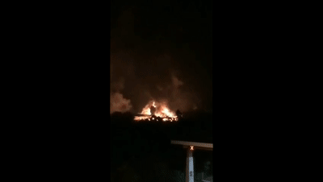

广东省应急管理厅通报广康生化公司“8·6”火灾事故
8月6日，广东广康生化科技股份有限公司仓库发生火灾，现场火光冲天。火情发生后，当地组织公安、消防、生态环境等部门赶往现场扑救，同时，疏散了厂区周边群众400多人。据了解，火灾持续两小时，期间蘑菇云升起，爆炸声音不断响起，附近村民闻到刺鼻的农药味道。

8月9日，广东省应急管理厅公布“8·6”火灾事故通报，通报强调事故是典型的重生产轻安全、违法违规行为引发的事故，以下是事故通报全文：
2019年8月6日23时30分左右，位于清远英德市沙口镇红峰管理区的广东广康生化科技股份有限公司（以下简称“广康公司”）成品仓库（AB2、AB3）发生火灾，过火面积约2000平方米，烧毁物料688.542吨，虽没有造成人员伤亡，但造成周边大量群众疏散，社会影响大。事故原因正在调查中。从目前掌握的情况看，事故暴露出广康公司安全生产管理工作存在诸多突出问题。一是安全管理混乱无序。发生事故的AB2仓库外搭建的雨棚下方违规堆放大量克菌丹水分散颗粒剂（WDG）等化学品，严重违反《常用化学危险品贮存通则》等标准规范要求。省应急管理厅组织专家指导服务组在5月16日对该企业现场检查时，明确指出仓库周围违规堆放物料的问题，要求企业立即整改，但事故发生当天AB2仓库周围仍堆放有大量物料，屡教屡犯、屡教不改问题突出，企业安全生产主体责任严重缺失。二是安全法制意识淡薄。发生事故的AB2、AB3仓库属于近年新建仓库，没有依法履行建设项目安全设施“三同时”手续，未经竣工验收便擅自投入使用。三是隐患整改流于形式。省应急管理厅专家指导服务组对该企业检查时指出49项隐患问题，至事故发生已近3个月，仍有多项隐患问题没有完成整改；同时，该企业5月11日自查发现“配电间安全设施不符合规范要求”等多项隐患问题，至事故发生时也未整改到位，成品仓库视频监控设备损坏超过一年，没有及时修复。带病运行问题严重，日常安全管理和隐患排查整治工作流于形式。四是安全管理制度执行不到位。企业领导带班制度未严格执行落实，事故当晚带班领导未按要求在岗在位带班值守。安全管理制度不健全，有的制度缺失，有的制度长期未修订更新、缺乏操作性，有的制度缺少相应的记录台账等。同时，也反映出市县应急管理部门存在日常监管、检查、执法工作不严不实，隐患排查整治跟踪落实不到位。
该起事故是广康公司今年发生的第二起生产安全事故，是典型的重生产轻安全、违法违规行为引发的事故，影响十分恶劣，教训极其深刻。为深刻吸取事故教训，举一反三、亡羊补牢，进一步加强危险化学品安全生产工作，强化企业落实安全生产主体责任，现提出以下工作要求：
一、提高政治站位，狠抓安全生产责任落实。今年是新中国成立70周年，确保安全稳定是当前的头等大事。各地要深入学习贯彻习近平总书记关于安全生产重要论述，坚决落实省委省政府部署要求，进一步强化政治自觉，坚持以人民为中心的发展思想，牢固树立安全生产红线意识，按照“党政同责、一岗双责、齐抓共管、失职追责”的要求，以对人民群众高度负责的态度和钉钉子精神，狠抓安全生产责任和工作措施落实，全力确保安全生产形势稳定。
二、持续深入开展风险隐患大排查大整治。各地要按照《危险化学品安全大排查大整治工作方案》的工作要求，突出重点，持续深化，不断巩固排查整治成果。采取突击检查、暗查暗访等方式组织“回头看”，突出检查企业主要负责人履职情况、全员安全生产责任制落实情况、隐患排查整改情况等，对存在不按期整改、“假把式”整改、拒不整改的企业，要严格落实“四个一律”执法措施。对不具备安全生产条件无法保证生产安全的，要坚决撤出作业人员，坚决暂扣安全生产许可证和责令停产停业整顿。
三、加强夏季危险化学品储存安全管理。当前正值夏季，高温、雷雨、台风等极端天气容易对危险化学品安全生产造成不利影响。各地要督促企业加强危险化学品储罐、仓库的安全管理，严禁超量储存、违规混存、超高堆放、野蛮装卸等行为。有效落实危险化学品仓库防雨、防潮、防雷电措施，特别是受潮易自燃或分解有毒气体的危险化学品，要严格按标准规范入库储存，严禁露天存放，严禁与禁忌物混合储存。加强防雷、防静电设施的巡检和维护，按规定定期检测，确保防雷、防静电设施完好有效。
四、强化危险化学品事故应急处置。各地要督促危险化学品企业根据实际及时修订应急预案，组织开展本单位的应急预案、应急知识、自救互救和避险逃生技能的教育培训，定期开展预案演练，配足配齐应急救援器材和装备，做好维护保养工作，确保一旦发生事故，能第一时间响应、第一时间处置，全力避免事态扩大。从即日起，各地在接报涉及危险化学品生产经营储存企业的事故信息后，要第一时间核实事故情况，第一时间上报省应急管理厅，第一时间派人赶赴现场指导处置。
五、认真做好事故调查和责任追究。清远市要严格按照“四不放过”和“科学严谨、依法依规、实事求是、注重实效”的原则，迅速组织开展广康公司“8·6”火灾事故的调查工作，深入分析事故的直接原因和间接原因，认定事故性质、分清事故责任，依法严肃追究责任单位和相关人员的责任。同时，清远市应急管理局要高度重视全市危险化学品及化工企业系统性安全风险，强化责任落实和监管执法到位，创新监管手段和监管方式，有效防范化解重大安全风险；并针对广康公司暴露出来的问题，对英德市应急管理部门工作抓落实方面开展全面检查，该问责的严肃问责。请于八月底前将事故查处及检查情况报省厅。
请迅速将本通报转发至所辖各级应急管理部门和各化工、危险化学品企业贯彻落实。
原文编辑: EHS资讯
原文链接: https://ehsinfo.cn/2019/08/19/广康生化仓库火灾事故.html
版权声明: 转载请注明出处(必须保留作者署名及链接)